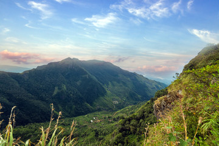
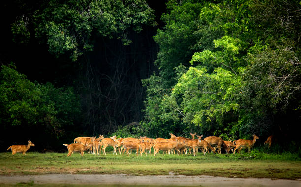
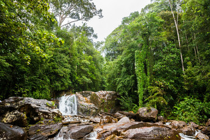

Wildlife aficionados will find paradise in Sri Lanka, an island nation in the Indian Ocean.
With its diverse ecosystems and abundant biodiversity, the nation presents a singular chance for wildlife research.

Horton Plains National Park
Popular tourist attraction Horton Plains National Park in Sri Lanka is renowned for its unique environment and indigenous species.
Offering sweeping views, the park is home to Baker's Falls and World's End.
It offers essential habitats for numerous species and is acknowledged as a UNESCO World Heritage Site.
Hiking, trekking, wildlife observation, and nature activities are available to visitors.
The park is a must-visit for anyone who enjoy the outdoors due to its vast biodiversity and scenic splendour.

Kumana National Park
Kumana National Park, a 35,000 hectare wildlife sanctuary in Sri Lanka, is a sanctuary known for its rich biodiversity and unique ecosystems.
Established in 1938 as a bird sanctuary, it now hosts over 200 bird species, waterfowl, wading birds, turtle nesting sites, and diverse mammals.
The park's numerous water bodies contribute to its ecological diversity.
Visitors can explore through guided safaris and nature walks, making it an ideal eco-tourism and wildlife conservation destination.

Sinharaja Forest Reserve
A hotspot for biodiversity, Sinharaja Forest Reserve is home to a variety of plants and wildlife, including indigenous species.
It is recognised as a UNESCO World Heritage Site in Sri Lanka.
Its 11,187 hectares are home to 50% of the indigenous mammals, birds, butterflies, reptiles, and amphibians found in Sri Lanka.
The reserve is well-liked for both animal photography and ecotourism.
In spite of the dangers posed by encroachment, illicit logging, and deforestation, conservation programmes and ecotourism strategies are being carried out.